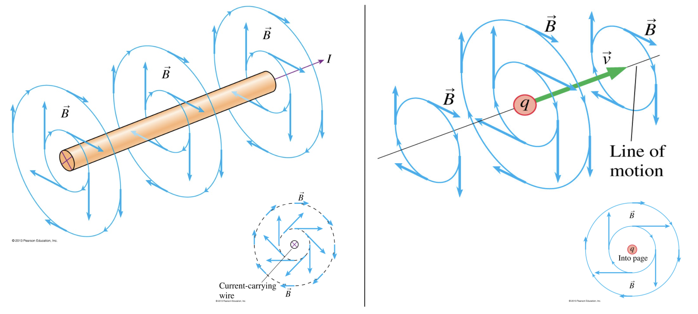

Lecture 11: Magnetic Fields and Forces#
Learning Objectives#
By the end of this lecture you should:
Be able to define what is meant by the magnetic force and sketch the magnetic field around a charged particle moving with velocity, \(v\).
Be able to calculate the magnetic force around a charged particle.
Be able to calculate the radius of motion of a charged particle in a magnetic field.
Be able to describe the motion of a charged particle in both electric and magnetic fields, and derive the equation showing this motion.
Magnetic Fields#
In this lecture, the nature of magnetic fields (B-fields) and the forces they exert on charges is going to be introduced. Although we often do not think about magnetism in our day to day lives, magnetic fields permiate all around as any moving charge produces a magnetic field. Let’s first consider the magnetic field that you are currently being exposed by at this very moment - the magnetic field produced by the Earth.
The core of the earth is made from molten iron and nickel, which move following convection currents (which we will look at in the thermal physics module). These convection currents produce a magnetic field.
This field has an approximate strength of \(25\) - \(65\, \mu T\) at the Earth’s surface and can be modelled approximately as a bar magnet, with the magnetic north and south pole aligned with the geographic poles. The unit \(T\) is known as Tesla. Most magnetic fields are in the micro to milli range and the strongest electromagnet on Earth produces a field of ~\(45\, T\). Often the unit Gauss is used instead (G → 1G = \(10^{-4}\,\)T/).
The magnetic north pole is more closely aligned with the geographic south pole. The magnetic poles move around the earth and have actually flipped several times throughout the history of the planet. The last time was ~42,000 years ago.
The Earth’s magnetic field deflects charged particles from the solar wind, protecting us from radiation and the ozone layer from depletion. Many charged particles are deflected to the poles where they interact with atmospheric constituents - this is the origin of the Aurora!
As mentioned above, the Earth acts similarly to a bar magnet. If a bar magnet is surrounded by iron filings, they will orient themselves along the magnetic field lines produced by the bar magnet. In the case of the Earth, solar charged particles will follow the the magnetic field lines produced by the Earth, which creates bands of radiation known as the Van Allen belts.
Magnetic field lines are directional and in a bar magnet move from the south pole to the north pole. As magnetic fields have both magnitude and direction, they are another example of a vector field.
Aurora Watch
The occurance and strength of aurora is dependant on the amount of charge particles that the sun is emitting into space. The intensity of solar particle emission follows an eleven year cycle, and at the time of writing, the solar maximum is approaching (estimated to be between late 2024 and early 2026).
This means you may get the chance to see the northern lights in Sheffield during your studies. There are many apps that help you gauge the best chance of seeing them in person - it may be worth downloading one! It helps to go somewhere dark to see them, but thankfully we are located next to the peak district.
In May of 2024, a large sun spot was oriented towards the Earth and produced a strong geomagnetic storm that induced aurora as far south as continental Europe. An unusually strong geomagnetic storm combined with a clear night sky is very rare… particularly in this part of the country, at this time of year, and localised entirely within your kitchen.
The following photograph is one that I took within the Peak district:
I will take any opportunity to share this photo….
Moving Charges and Magnetic Fields#
Magnetic fields are produced by moving charges, for example, electrons as they move through a wire. In this example, the shape of the magnetic field produced will be dependant on the shape of the wire. The shapes of these magnetic fields can again be shown using iron filings or compasses.
Consider the magnetic field produced by the straight wire. You will notice that the field lines are form concentric rings around the wire. In order to determine the direction of a magnetic field produced by moving charges we use one of two right hand rules.
Right-Hand-Rule 2#
Right-hand-rule 2 states that the the direction of a magnetic field produced by a current carrying wire can be determined by making a thumbs-up with your right hand. The direction that the thumb is pointing represents the direction that the conventional current is flowing, and the direction that your fingers are pointing (curled) represents the direction of the magnetic field lines. This is shown in the figure below:
The direction of the field is same whether considering many charges moving through a wire, or a single charge moving through free space. The direction of the B-field will always be perpendicular to the direction of motion of the charge (its velocity). The strength of the magnetic field will decrease at increasing radial distance from the wire. The closer the field lines are together, the stronger the magnetic field. You will also note that the magnetic field vectors are always tangental to the field lines. This is true for both charges moving in a wire and individual (positive) charges moving through free space, as illustrated below.

If the wire is reshaped it will produce a different shape mangetic field. For example if the wire is looped over and over again like a spring, the contribution to the magnetic field from each coil forms a larger overall magnetic field as shown in the figures below.
A coil of wire like this is known as a solenoid. A solenoid is an example of an electromagnet. The strength of the magnetic field produced is dependant on the amount of current flowing through the wire and where the measurement of the field is taken from.
Important
Amperes law allows us to derive formulae for the magnetic field strength for different wire configurations.
For a point charge, the magnetic field at a distance \(r\) will be given by:
where \(\mu_0\) is the permeability of free space and has a value of \(4 \pi \times 10^{-7} \, H\) (\(H\) is the unit Henry and is equivalent to (\(kg \, m^2 \, s^{-2} \, A^{-2}\)), \(q\) is the magnitude of the charge, \(r\) is the distance from the charge to the point of measurement, and \(\theta\) is the angle between the velocity vector and the line vector spanning between the charge and the point of measurement as shown in the figure below:
The magnetic field around a wire carrying a current \(I\) at a distance \(r\) is given as:
The magnetic field at the centre of a solenoid with many loops (solenoid length is greater than radius) is given by the formula:
where
\( n = \frac{N}{L} \),
and where \(N\) is the total number of turns of wire in a given length \(L\).
The magnetic field at the centre of a solenoid with few loops (solenoid radius is greater than length) is given by the formula:
where \(R\) is the radius of the loop.
If magnetic fields are produced by moving charges, you may be wondering how fixed magnets, like a bar magnet, are magnetic. Essentially these are moving charges on a quantum scale. The charges in atoms (electrons and protons) are found in orbitals, the motion of the charges in the orbitals means that they they act as tiny magnets. When the magnetic moments of many atoms become alligned, their magnetic fields add together to produce the permenant field produced by the bar magnet.
Magnetic Forces#
A moving charge creates a magnetic field which exerts a magnetic force on another moving charge. The direction of the force is always perpendicular to the velocity of the charge and the direction of the magnetic field.
The magnetiude of the force may be calculated using the formula:
\(\vec{F} = q\vec{v} \times \vec{B}, \)
which can be expressed as:
\( F = Bqv \sin{\theta_{v,B}}. \)
This is known as the vector cross product. We use this as to determine the force, we are only interested in the components of velocity that are perpendicular to the direction of the magnetic field. The magnitude of the force is greatest when the velocity of the charge and the B-field are perpendicular to one another:
\( F = Bqv \sin{\theta_{v,B}}, \)
\( F = Bqv \sin{90}, \)
\( F = Bqv \cdot 1,\)
\( F = Bqv. \)
When the the velocity of the charge is parallel to the direction of the B-field (they’re moving in the same direction), the force acting on the particle is zero:
\( F = Bqv \sin{\theta_{v,B}}, \)
\( F = Bqv \sin{0}, \)
\( F = Bqv \cdot 0,\)
\( F = 0\, N \)
Similarly, the force acting on a current carrying wire can be calculated as:
\(\vec{F} = L\vec{I} \times \vec{B}, \)
which can be expressed as:
\( F = BIL \sin{\theta_{v,B}}. \)
Warning
The equation \(\vec{F} = q\vec{v} \times \vec{B} \), was written using vector notation indicating that the force, velocity and magnetic field are vectors. This notation is not used throughout these notes as most of the problems you will encounter will not require you to consider the individual vector components, however, you should be aware that each of these quantities are in fact vectors.
Right-Hand-Rule 1#
In order to determine the direction that the force on the charged particle/wire acts, we need to use another right hand rule: right-hand-rule 1, which is shown below:
This right hand rule applies to a positive charge. It can also be used for a negative charge, but the force will actually act in the opposite direction! This hand rule is consistent with Flemming’s left hand rule, but for consistency, the two right hand rules will be used on this course.
Right Hand Rule 1 Tip
It is very easy to forget which vector should be assigned to each finger/thumb. A simple way to remember is to hold your right hand open with your thumb sticking out.
If you do this, your thumb represents the velocity of a positive charge, your fingers represent the direction of the B-field and the force will be acting out of your palm.
This is still exactly the same as what is shown in the figure below, but may be easier to remember.
A consequence of the force always acting perpendicularly to the velocity of the charge and direction of the B-field is that the charge will follow a circular path in a uniform magnetic field (if the velocity is also perpendicular to the direction of the B-field). This is because the force causes the particle to constantly accelerate in the perpendicular direction as illustrated below:
You may recall from your mechanics course that objects moving in a circular path experience a centrepetal force, \(F_c\), which in this instance will be equal to the magnetic force \(F_B\):
\( F_B = F_c \)
\( Bqv \sin{\theta} = \frac{mv^2}{r}. \)
In circular motion, \(v\) and \(B\) are always perpendicular meaning that \(\sin{\theta} = \sin{90} = 1\), thus:
\( Bqv = \frac{mv^2}{r}. \)
The radius of the path the charge follows can be determined by rearranging the equation above:
\( r = \frac{mv}{Bq}. \)
Finally, consider what would happen if a charge was placed within a magnetic field that is parallel with a coexisting electric field. The charge would be accelerated in by the electric field, whilst following a circular path due to the magnetic field. This would result in the charge following a helical path as shown:
This combined electric and magnetic force is known as the Lorentz force, which is expressed mathematically as:
\( F = qE + qv \times B \).
Magnetic Field Applications#
Magnetic fields are used to confine high energy charged particles in experimental nuclear fusion reactors in order to sustain the conditions required for nuclear fusion (more on this next semester!)
Magnetic fields are routinely used in particle and nuclear physics research to filter particles/nuclei of interest via magnetic deflection. Using the equation \( r = \frac{mv}{Bq} \) it is evident that the path that a charges will follow is dependant on its charge-to-mass ratio, thus the B field can be tuned so that only the desired particles (correct charge-to-mass ratio) are deflected to the experimental station whilst the rest are deflected to a beam block.
Magnetic fields are also used in medicine, for example are part of an MRI (magnetic resonance imaging) scan:
When you lie inside an MRI machine, the magnetic field it produces temporarily realigns water molecules in your body. Radio waves cause these aligned atoms to produce faint signals, which are used to create cross-sectional MRI images.
MRI machines require very strong and stable magnetic fields (1.5 - 7 T), which are produced using superconductive electromagnets.
A superconductive magnet (usually made of a niobium-titanium alloy or niobium-tin alloy) is cooled using liquid helium to 4K. At these temperatures, these alloys lose all of their electrical resistivity allowing current to flow through them unimpeded.
The current flowing through the superconducting magnet produces a very strong magnetic field - enough to rip ferromagnetic implants out of the body!
Questions#
Warning
Atempt the questions before looking at the solutions otherwise you will not learn!
Students who look at mark schemes without going through the motions of a question often think “yes, that’s what I would have done”, but are then unable to perfom on exams as the knowledge was never consolidated through practise.
Note
Units have been omitted in calculations below for simplicity. Ensure you know what each value represents.
Question 1#
Find the magnitude and direction of the force on the particle shown in the diagram (\(v = 1.2 \times 10^3 \,m \,s^{-1}\), \(q = + 7.0 \, \mu C\), \(B = 0.50 \, T\).

Q1 Hint
We use dots and crosses to represent magnetic field lines when they are directed into or out of a 2D surface. The cross is used when the field is directed into the plane (i.e. away from us) and the dot is used when the field is directed out of the plane (i.e. towards us). An easy way to remember this is to think of which end of an arrow you would see if you had released it or were heading towards you!
Q1 Solution
In this example, \(B\) and \(v\) are perpendicular to one another, therefore \(θ_{v,B} = 90°\) and as \(\sin{90} = 1\):
\( F = qvB \) \( F = (1.2 x 10^3)(7 x 10^{-6})(0.5) \) \( F = 0.0042 \, N \)
\( F = 42 \, mN. \)
The force must be perpendicular to both the v and B and can be determined using the vector right hand rule. B is into the page, therefore F is directed up to the left! If the charge was negative the force would be in the opposite direction.
Question 2#
An electron with charge-to-mass ratio of \(1.8 \times 10^{11} \, C \, kg^{-1}\) is travelling at right angles to a uniform magnetic field of flux density \(6.2 \, mT\). The speed of the electron is \(3.0 \times 10^6 \, m \, s^{-1}\). What is the radius of motion?
Q2 Solution
To solve this question we simply need to recall that the electron will follow a circular path, therefore we can equate the centrepetal force to the magnetic force acting on the charge:
\( F_B = F_c \)
\( Bqv = \frac{mv}{r} \)
\( r = \frac{mv}{Bq} \)
\( r = \frac{m}{q} \frac{v}{B}\)
The charge to mass ratio (\(\frac{q}{m}\)) is given, thus:
\( r = \frac{1}{1.8 x 10^{11}} \frac{3.0 x 10^6}{6.2 \times 10^{-3}}\)
\( r = 2.7 \times 10^{-3} \, m \)
\( r = 2.7 \, mm.\)